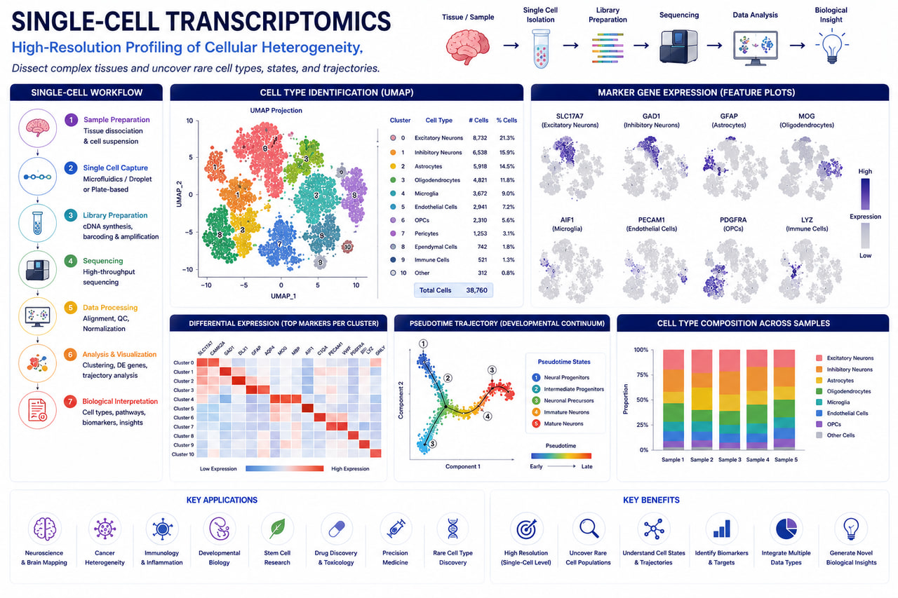

Single-Cell Omics
AI-Powered Single-Cell RNA Sequencing (scRNA-Seq), Single-Cell ATAC-Seq & Multiome Analysis Services

RASA Life Science Informatics provides advanced Single-Cell Omics analysis services that enable researchers to explore cellular heterogeneity, identify rare cell populations, characterize cellular states, and uncover complex biological mechanisms at single-cell resolution.
Our AI-powered bioinformatics workflows support Single-Cell RNA Sequencing (scRNA-seq), Single-Cell ATAC-seq (scATAC-seq), Multiome Analysis (RNA + ATAC), Cell–Cell Communication Analysis, Trajectory Inference, and Spatially Resolved Single-Cell Studies. We help pharmaceutical companies, biotechnology organizations, hospitals, research institutes, and academic laboratories transform large-scale single-cell datasets into biologically meaningful insights.
Using scalable and reproducible computational pipelines, we support projects across oncology, immunology, neuroscience, developmental biology, regenerative medicine, infectious diseases, rare diseases, and precision medicine research.
Single-Cell Omics Services
Single-Cell RNA Sequencing (scRNA-seq)
High-resolution transcriptomic profiling of individual cells for understanding cellular diversity and gene expression dynamics.
- ✓Cell clustering and subpopulation identification
- ✓Cell-type annotation
- ✓Marker gene discovery
- ✓Differential expression analysis
- ✓Rare cell population detection
- ✓Batch correction and data integration
Single-Cell ATAC-Seq (scATAC-seq)
Analysis of chromatin accessibility at single-cell resolution to understand gene regulation and epigenetic mechanisms.
- ✓Peak calling and accessibility analysis
- ✓Regulatory element identification
- ✓Transcription factor activity analysis
- ✓Chromatin state characterization
- ✓Integration with scRNA-seq datasets
Multiome Analysis (RNA + ATAC)
Integrated transcriptomic and epigenomic analysis to connect gene expression with regulatory mechanisms.
- ✓Multi-modal data integration
- ✓Gene regulatory network construction
- ✓Cell-state characterization
- ✓Regulatory pathway discovery
- ✓Cross-platform data harmonization
Cell–Cell Communication Analysis
Identify signaling interactions between cell populations within tissues and disease microenvironments.
- ✓Ligand–receptor interaction analysis
- ✓Tumor microenvironment profiling
- ✓Immune cell communication mapping
- ✓Network visualization
- ✓Pathway-level interaction analysis
Trajectory & Pseudotime Analysis
Investigate cellular differentiation, lineage relationships, and dynamic biological processes.
- ✓Developmental trajectory analysis
- ✓Pseudotime inference
- ✓Cell fate prediction
- ✓RNA velocity analysis
- ✓Differentiation pathway modeling
Key Features
Deliverables
Single-Cell Analysis Outputs
Applications
Cancer Research
Tumor heterogeneity analysis, tumor microenvironment profiling, and immuno-oncology studies.
Immunology
Immune cell characterization and immune response profiling.
Neuroscience
Neuronal diversity analysis and neurodevelopmental studies.
Developmental Biology
Cell differentiation and lineage tracing.
Stem Cell Research
Cell fate determination and regenerative medicine studies.
Precision Medicine
Patient-specific cellular profiling and therapeutic response prediction.
Infectious Disease Research
Host–pathogen interaction studies at single-cell resolution.
Technologies & Platforms
Single-Cell Analysis Platforms
Bioinformatics Tools
Cell Communication Tools
Infrastructure
Representative Analysis Outputs
Cellular Heterogeneity Analysis
Identification of known and novel cellular populations.
Cell-State Discovery
Detection of disease-associated cellular states and transitions.
Immune Profiling
Characterization of immune landscapes and response mechanisms.
Cell–Cell Interaction Networks
Understanding signaling pathways within complex tissues.
Multiomic Regulatory Analysis
Linking chromatin accessibility to gene expression.
Why Choose RASA?
Frequently Asked Questions
Ready to partner with a trusted bioinformatics company in India?
Get in touch with our team in Pune, India to discuss sample sizes, platform details, and custom bioinformatics pipeline configurations for your research program.
Start a Project